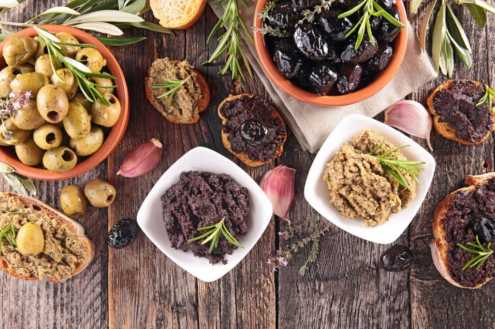

Congratulations ! You have reached level 12 ! As a reward, here is a description of the area you will visit.
Provence-Alpes-Côte-d'Azur
Presentation of the region
Provence-Alpes-Côte d'Azur is an administrative region in the south-east of France. Its capital is Marseille, the second most populated city in France. The Provence-Alpes-Côte d'Azur region is bathed to the south by the Mediterranean Sea. It borders on the east of the Italian regions of Liguria and Piedmont and is bordered on the north by the region Auvergne-Rhône-Alpes and on the west by the region Occitanie, the Rhône forming the regional limit. Its territory covers a large part of the Southern Alps. Provence-Alpes-Côte d'Azur has 4,983,938 inhabitants in 2014, making it the seventh most populated French region. In 2013 and taking into account the merger of the regions in 2016, it is the fifth region of France by GDP (€152.13 billion) and the third by GDP per capita
Specialities
- Tapenade
- The Socca
- The fourgasse
- Ratatouille

Important places to visit :
- "La baie de Cannes" : Cannes and its Croisette. Who doesn’t know this iconic city? Between its festival and its luxurious boutiques, Cannes no longer needs to forge a reputation. But luxury, rhinestones and glitter are not the only assets of the beautiful. Its coastline is superb as well as its city center. You will enjoy a stroll by the sea up to the old town. Its castle is also very nice to visit. Of course, for shoppers, Cannes will not disappoint you. Many shops are concentrated in the city center but also along the Croisette, for your pleasure!
- Saint-tropez : Whether you like bling-bling or not, Saint-Tropez is a true jewel of the French Riviera. The atmosphere is obviously changing according to the different periods of the year, but each season has its charm. its small harbour lined with restaurants and ice cream parlours. Its small streets with emblematic colours. Its world-famous church. Not to mention his Tropezian pie! We can’t miss it! Whether during the day or in the evening, Saint-Tropez is a must in the region.
- Monaco : The beautiful Principality is definitely a must if you come to visit the French Riviera! Coming to Monaco is like entering another world: that of beauty and wealth. Because no, it is not a myth. While strolling around Monaco you are sure to come across luxurious sports cars as well as upscale boutiques. Stroll through the city and its pretty alleys, climb up to its palace, ideally located on the rock that dominates the entire bay. The view is great. Visit also the gardens that are really nice. The Aquarium of Monaco is also a rewarding activity if the area interests you. Think about getting your tickets!
- The market of Nice : Nizza la Bella, as the Italians say, is a must-see city on the French Riviera. World famous for its Promenade des Anglais, Nice takes you in an Italian atmosphere. This city has many assets, such as its castle with its waterfall, the Mont Boron which offers you an incredible view, the old Nice and its charm of yesteryear. But also culinary specialties like socca or pissaladière! And, of course, its Cours Saleya flower market! Then, in February, its dazzling Carnival. Nice has so much to offer!